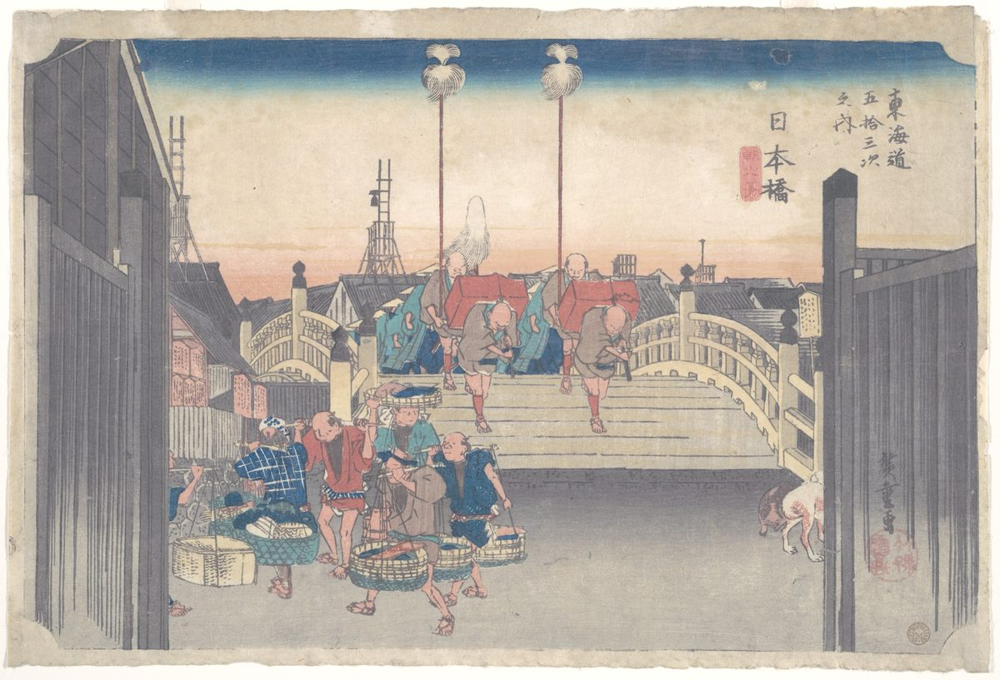
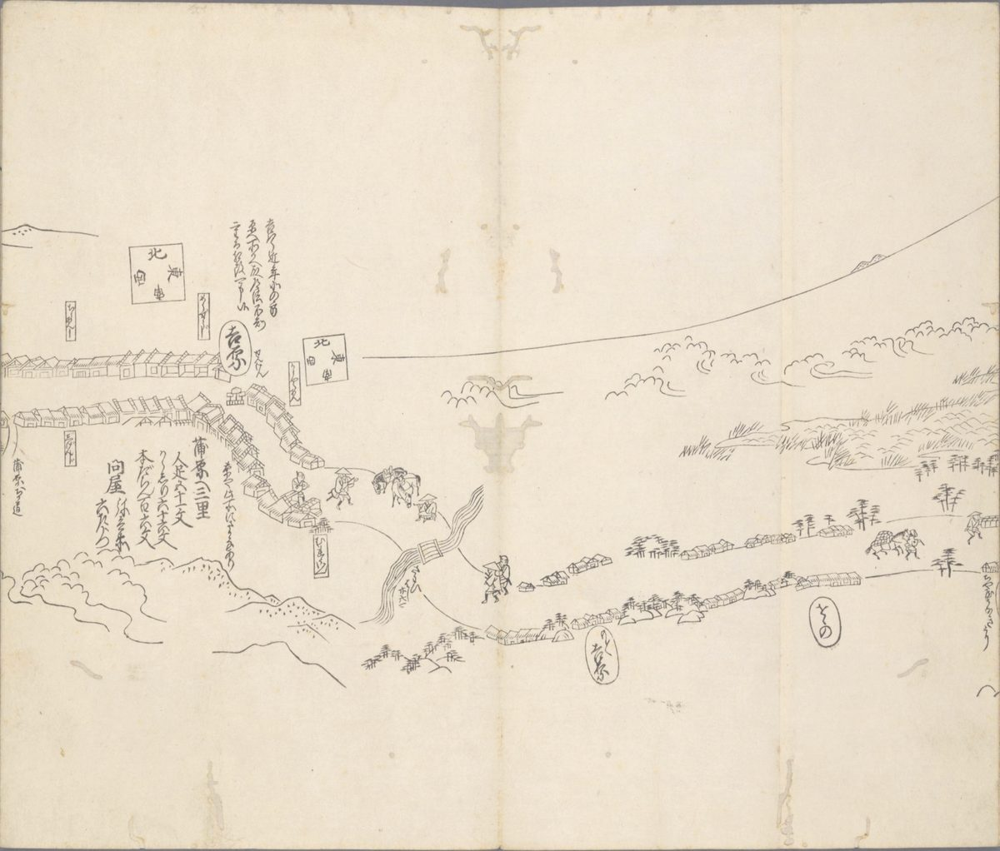
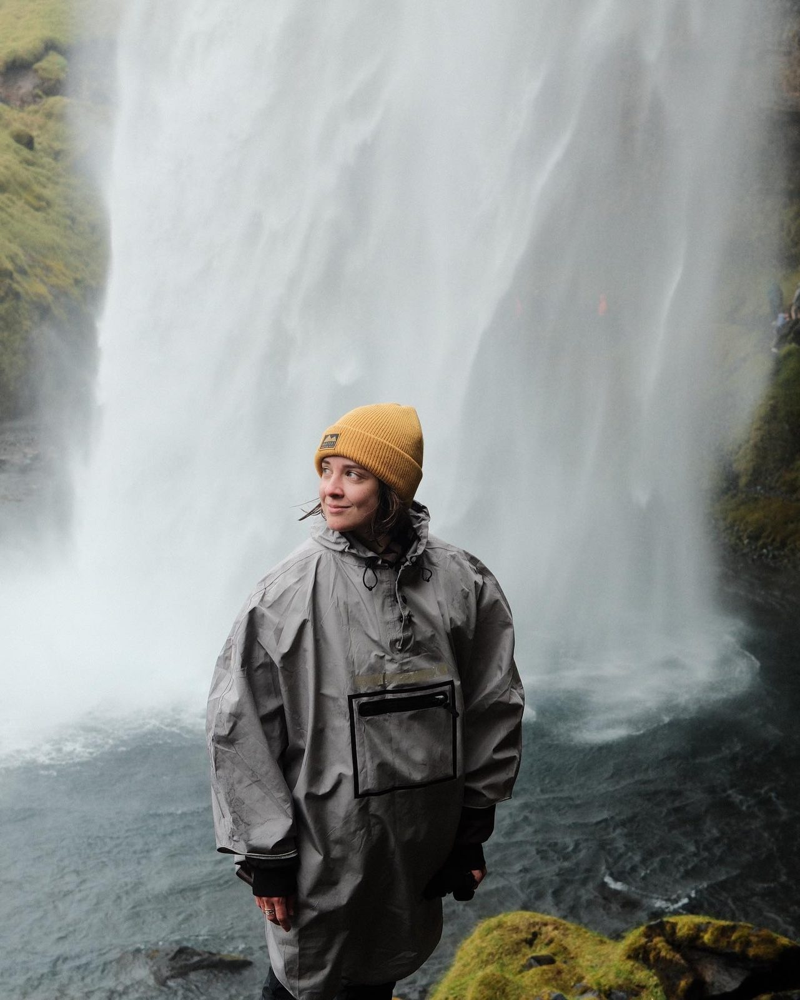

Переждать или взять похожую работу
Иногда это верный ход, особенно если сейчас главное — деньги и отдых. Программа нужна, когда прошло несколько месяцев, а вопрос «что дальше» не уходит.
Три месяца один на один, чтобы разобраться, какое дело твоё, и собрать к нему дорогу не из списка вакансий, а из твоей истории.
Дело — это работа в найме, свой проект или новая роль на прежнем месте. Иногда — решение остаться.
Отвечаю за день-два. Напиши в двух словах, с каким запросом приходишь, чтобы я сразу ухватила, про что разговор.
Первый разговор — 45–60 минут, бесплатно. Как проходит разговор →

От людей, у которых в работе что-то закончилось, я часто слышу: «не понимаю, что делать дальше, и это тормозит всё остальное», «это всё ещё про меня?», страх прожить жизнь впустую. По-моему, ответ почти всегда уже лежит в прожитом, поэтому начинаем с твоей истории, а рынок смотрим позже, на неделях 7–8.
Цель — чтобы к концу стало спокойнее: виден горизонт, понятно, из чего ты выбираешь и почему, на сколько месяцев хватит денег, и первый шаг уже сделан. На руках останется:
И по желанию — Спутник: встречи-сверки после программы раз в две–четыре недели, чтобы маршрут не забылся через месяц.

Каждая рабочая встреча начинается с получаса «что изменилось за неделю» и заканчивается одним маленьким заданием в жизни: рассказать близкому про живой период, спросить двух людей, что у тебя получается. После привалов задания нет. На встрече откапываем, на неделе ты проверяешь об жизнь.
Твой запрос и что ещё происходит в жизни. Формулируем один главный вопрос на три месяца и отмечаем сферы жизни «как сейчас», чтобы в конце было с чем сравнить. Договариваемся, что записываем и что остаётся между нами. Первое задание — неделю замечать, где ты на своём месте, а где нет.
Колесо контекстов
Идём по твоей жизни по сезонам и смотрим, где была энергия, где получалось, что «не считалось работой». На выходе три самых живых периода и три самых тяжёлых; в тяжёлые заходим настолько, насколько тебе нормально, и «сюда не пойдём» работе не помешает.
Три живых периода, полная версия
Кто ты одной строкой, что тебе важно и где две твои ценности спорят. Отдельно — список наносного: цели и «надо», которые на самом деле пришли от других.
Мои герои · Ценности из поступков
Что ты умеешь как специалист, как человек и как тот, кто прожил свою жизнь, и у каждой способности есть история-доказательство. После неё у тебя первая версия компаса.
Интервью близких · CliftonStrengths по желанию, оплачивается отдельно
Сначала разрешаем себе фантазировать, без «а деньги?» и пока без выбора: собираем образы и то, как хочется себя чувствовать.
Семь жизней · 40 хочу
Смотрим, что из образов сходится с ценностями и способностями. Остаются два-три направления вида «сфера плюс роль», и на неделе ты по дню живёшь с каждым, будто оно уже выбрано, и замечаешь, к какому тянет вернуться.
Лучшее возможное «я» · Карточки событий
Берём одну дорогу и смотрим, чего она требует, что у тебя уже есть, во сколько обойдётся смена дела и сколько нужно в месяц: минимум, комфорт, мечта. Цель — понять, хочется ли проверять её дальше; «да», «нет» и «пока не знаю» — все рабочие ответы.
Приз в деньгах · Премортем дороги · Разговор-прототип
Ты идёшь к двум-трём людям, которые уже живут в выбранной сфере, и спрашиваешь про обычный день. Если выйти на таких людей трудно, помогу найти, с кем поговорить. На привале час без упражнений: что услышано и держится ли решение.
То, без чего у меня самой план не держался: один-три сценария, которые срывали прошлые попытки, и опоры — люди, ритм, ритуал, аптечка на плохой день. Сценарии разбираем, но не лечим: если что-то упирается в травму, тело или сильные перепады состояния, это к терапевту или врачу, и я скажу об этом.
Карточка паттерна · Аптечка на стену
Вехи на год-два, ближайший квартал по шагам, деньги и сроки смены дела. Первый шаг ставим в календарь и проверяем вопросом «завтра понедельник — сделаю?»; если ответ «нет», делим шаг пополам и спрашиваем снова.
Маршрут от 5 лет до сегодня · WOOP · Проверка «завтра понедельник»
Первый шаг — до этой встречи. Смотрим, что с ним случилось и что изменилось с первой недели; если шаг не сделан, разбираем, что помешало. Я передаю плейбук и аптечку, а собеседника — если он уже собран.
колесо «было → стало» · плейбук
Через неделю — час про первые дни на маршруте и, если хочется, про Спутника.
После каждой встречи ты получаешь письменный итог: что мы нашли, твоими словами. Если ты согласишься на запись, я буду собирать его по расшифровке с ИИ-помощником: он будет искать повторы и противоречия, а я — проверять всё руками. Про записи — в вопросах ниже ↓

Меня зовут Саша Свердловская, я живу в Амстердаме. Я несколько раз заканчивала и начинала заново, последний раз — когда после выгорания сворачивала студию Tetraform, где восемь лет была сооснователем и руководителем продакшена.
Увольнения в найме у меня не было, но были расставания с партнёрами, отказы заказчиков и большие завершения, а чувство там очень похожее, так что, скорее всего, я пойму. Мне кажется, мой опыт особенно пригодится, если ты думаешь, нырять ли в новое дело, или если за годы в одном деле кончились силы.
С 2017-го, медля перед новым решением, я спрашиваю себя: «Когда, если не сейчас?» — и начинаю.
С ноября по май я вела одного человека по ранней версии программы: она была длиннее и шла полгода. Если мерить объёмом, это около двадцати встреч и больше двухсот тысяч слов расшифровок, примерно два романа, которые никто никогда не станет перечитывать. Поэтому из них собрались вещи покороче: компас, карта повторяющихся сценариев (их набралось около тридцати, и работали мы по одному в месяц, а не со всеми сразу), ритуалы и плейбук. Часть снаряжения придумали вместе: например, киты — наборы вещей и действий под одно дело: собрал кит, вошёл в роль. Жизнь за полгода успела поменяться, и план устарел раньше, чем мы дошли до шага; почему теперь двенадцать недель, в вопросах ниже.
Что из этого вышло, я пересказывать не буду: это его история, и мои цифры здесь ничего не докажут. Вот что он сказал сам на последней встрече.
Материал мой, я не строю защиту, я ему сразу изначально доверяю.
Вытаскивали из меня, иногда клещами, иногда просто кинув мячик в нужную сторону. Я бегу и говорю: ой, так я уже в процессе.
Когда мы с тобой проговорили про киты, я такой: господи, это же геймчейнджер.
В действии нет унижения, но есть директивность. И иногда это нужно, иногда это окей. Просто не всегда.
Это невероятный опыт. Я очень рад, что он помог мне.
Будто просто поговорили. Я через тебя поговорил сам с собой.
Иногда это верный ход, особенно если сейчас главное — деньги и отдых. Программа нужна, когда прошло несколько месяцев, а вопрос «что дальше» не уходит.
Многие начинают с резюме и рынка, и это быстрый путь, если направление уже понятно. Я начинаю с истории и заканчиваю планом и опорами на случай, когда он начнёт срываться.
Помогает двигаться к цели и держать темп, многие помогают и с выбором цели. Здесь выбор идёт из твоей истории, а в конце остаются компас и маршрут, к которым можно вернуться.
Работает с состоянием и его причинами и часто тоже с вопросами смысла и выбора. Если сейчас главное — состояние, начинать стоит с него, а если вопрос про дело и состояние в целом держит, тогда ко мне, иногда параллельно.
Дают слова для себя. Я прошла много тестов, и каждый для меня — взгляд с одной стороны, но твоей истории ни один не знает.
Когда он знает о тебе мало, ответы получаются общими. Мне с ним не хватало одного: чтобы в понедельник кто-то спросил, сделан ли шаг.
Близкие нужны, и в программе мы к ним обратимся, но им трудно быть нейтральными: они хотят, чтобы тебе поскорее стало спокойнее.
3 500 €
Отвечаю за день-два. Напиши в двух словах, с каким запросом приходишь, чтобы я сразу ухватила, про что разговор.
Первый разговор — 45–60 минут, бесплатно. Как проходит разговор →
По форме ближе всего к фасилитации: я больше спрашиваю, чем советую. С травмой мы не работаем. Если по ходу станет хуже или откроется то, что требует терапевта, скажи мне, даже если кажется, что это не по теме, и вместе решим, замедлиться, взять паузу или продолжать параллельно с терапией.
Может быть и так, обещать обратное не буду. Цель — чтобы стало спокойнее и понятнее, из чего ты выбираешь; иногда выбор — остаться на месте. Если по ходу поймёшь, что это не твоё, скажи сразу; что тогда с оплатой, проговариваем до оплаты.
Обещать, что ждёт, не могу. Рынок в программе есть, просто не в начале: на неделе 7 смотрим, чего требует выбранная дорога и что у тебя для неё уже есть, а на неделе 8 ты говоришь с людьми, которые там работают. Бывает, что после этого выбор меняется.
Когда я полгода вела одного человека по ранней, более длинной версии, жизнь успела поменяться, и план устарел раньше, чем мы дошли до шага; поэтому здесь двенадцать недель. В студии мы ни разу не дошли до конца проекта по первому плану, так что перестраивать по ходу я привыкла.
Перенести встречу можно, если предупредить за пару дней. Длинную паузу без причины я не советую: программа держится на ритме раз в неделю. Если жизнь накрыла — болезнь, новая работа, кончились силы, — скажи, и решим, сдвинуть встречи или остановиться.
В этом формате пока никто: программа идёт впервые, первые два человека начинают в ноябре.
Записи — только с твоего согласия; как храним и что остаётся у тебя, обсуждаем и фиксируем письменно до старта.
Можно в евро или в рублях, детали обсуждаем в личке.